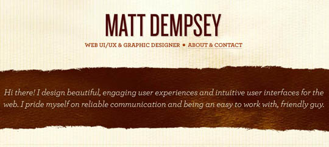

Home

My Intro
My name is Rashmi Chauhan, hold a B.Tech degree in Computer Science.
I have more than 2 years of experience as an associate software engineer.
At present, I have been working with ABC Tech Solutions since January 2020 as a Python developer.
In my current role, I am responsible for the design, development, and delivery of software applications.
I work on applications based on .NET using technologies such as C#, ASP.NET, Web API, LINQ, TPL, and Angular.
I have good communication skills as well as good team spirit.
I am looking for employment that challenges my knowledge and skills in the software industry.
Biodata
| MY BIODATA |
|---|
Name:Rashmi chauhan
|
Projects
Project 1: Updating fintechnews.com (Fintech News Inc.) BackendDeveloper
Duration: Three months Technologies Used: Python, PHP, Ruby, Javascript. Created a content management system serving as a client interface that reduced download times by 30%. Developed new admin panel, which improved internal operating efficiency by over 40%. Created comprehensive testing regime using RSpec to ensure bug-free code. Rebuilt entire website with up to date technologies and frameworks.Programming Projects
Coding a Chat Application in Java Created a group chat application using MulticastSocket (Java Platform SE 7) with additional capabilities for joining “groups” of other multicast hosts on the internet. Used Java’s RMI (Remote Method Invocation) to achieve encryption-decryption.
Contactme On